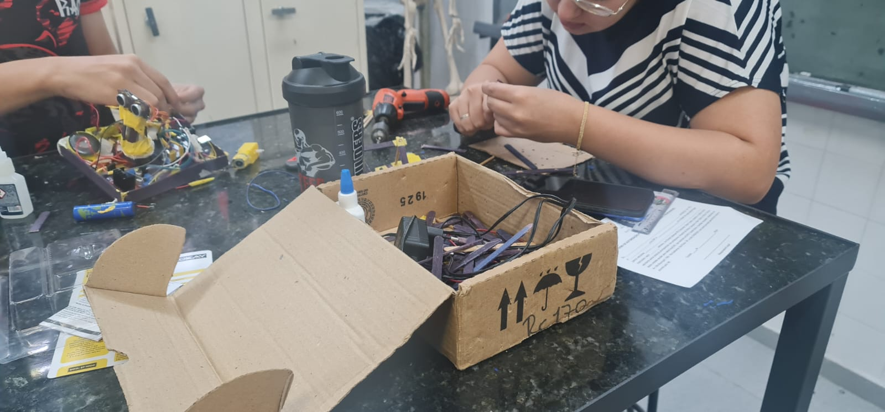

Introdução
Este projeto, apresentado na feira de ciências, explora a construção de estruturas mecânicas utilizando
palitos de madeira, motores e sensores, inspirado nas esculturas cinéticas de Theo Jansen. A proposta é
criar uma aranha motorizada que simula movimentos orgânicos, utilizando o microcontrolador Arduino como
o núcleo do sistema.
A aranha é projetada para demonstrar princípios de mecânica, eletrônica e programação de forma prática e
envolvente. A utilização de palitos de madeira não apenas torna o projeto acessível, mas também permite
a exploração da criatividade na construção. Os motores proporcionam movimento, enquanto os sensores
permitem que a aranha reaja ao ambiente, criando uma interação dinâmica.
Este projeto não é apenas uma demonstração técnica, mas também uma oportunidade de despertar o interesse
pela ciência e pela engenharia. Ao apresentar esta criação, buscamos inspirar outros a explorar as
possibilidades da robótica e da mecânica, mostrando que, com inovação e dedicação, é possível
transformar ideias em realidade em um ambiente divertido e educativo.
Explicação Geral
Nessa seção, você encontrará informações detalhadas sobre os componentes, código e referências bibliográficas usadas para criar coisas de palito motorizadas.
Componentes
- Palitos de madeira
- Servos motores
- Sensores (ultrassom, luz, etc.)
- Arduino Uno
- Fios e conectores
- Bateria e suporte
Detalhes dos componentes
Servo Motor (Servo.h)
Controla o movimento do radar (sensor de ultrassom), girando-o para detectar a distância dos objetos em
diferentes direções. Essencial para ajustar a direção da aranha.
LEDs (lu1, lu2, lu3)
Indicadores visuais que acendem conforme o movimento da aranha, destacando mudanças de direção e
sinalizando estados importantes.
DC (in1, in2, velo)
Responsável pela locomoção da aranha, movendo-a para frente ou para trás de acordo com os sinais de
controle enviados pelo Arduino.
Gerador de Som (speakerPin)
Reproduz sons para alertas e feedbacks sonoros, como quando a aranha detecta um obstáculo ou realiza
ações específicas.
Sensor Ultrassônico (trigPin, echoPin)
Detecta a distância de objetos à frente da aranha, permitindo a inversão de direção quando necessário
para evitar colisões ou ajustar o movimento.
Esses componentes formam a base do funcionamento da aranha, com o Arduino Uno coordenando todos os
processos para garantir uma movimentação eficiente e responsiva.
Código
// Inclui a biblioteca Servo.h para controle do motor de rotação do radar (ultrassom)
#include
// Variáveis para o motor de rotação do radar (ultrassom)
Servo MtRadar;
// Variáveis para os LEDs
const int lu1 = 12;
const int lu2 = 13;
const int lu3 = 11;
// Variáveis para o motor de rotação do robô
const int in1 = 1;
const int in2 = 2;
const int velo = A0; // Pino de controle da velocidade do motor
int ande = 1; // Controla a direção do motor (1 = para frente, -1 = para trás)
int speedM = 255; // Velocidade do motor
// Variável para o gerador de som
const int speakerPin = 8;
// Variáveis para o sensor de radar (ultrassom)
const int trigPin = 6;
const int echoPin = 7;
const float minDistance = 5; // Distância mínima em cm
const float maxDistance = 30; // Distância máxima em cm
// Posição atual do motor de rotação do radar (servo motor)
int posicaoAtual = 0;
// Função de inicialização do Arduino
void setup() {
// Configura a posição inicial do radar e os pinos necessários
pinMode(trigPin, OUTPUT); // Pino de controle do trigger do ultrassom
pinMode(echoPin, INPUT); // Pino de controle do echo do ultrassom
MtRadar.attach(0); // Pino do servo motor para o radar
pinMode(speakerPin, OUTPUT); // Pino de controle do som
servoMove(90, 2, 0); // Define a posição inicial do radar (90°)
// Configura os pinos de controle do motor de rotação do robô
pinMode(in1, OUTPUT);
pinMode(in2, OUTPUT);
pinMode(velo, OUTPUT);
// Configura os pinos de controle dos LEDs
pinMode(lu1, OUTPUT);
pinMode(lu2, OUTPUT);
pinMode(lu3, OUTPUT);
// Desliga os motores no início
digitalWrite(in1, LOW);
digitalWrite(in2, LOW);
// Animação de inicialização com LEDs e som
delay(200); // Pausa por 0,2 segundos
playMelody(); // Chama a função que toca a melodia de inicialização
// Liga e desliga os LEDs em uma sequência de animação
digitalWrite(lu1, HIGH);
digitalWrite(lu2, HIGH);
delay(100); // Pausa por 0,1 segundos
digitalWrite(lu1, LOW);
digitalWrite(lu2, LOW);
delay(100); // Pausa por 0,1 segundos
digitalWrite(lu1, HIGH);
digitalWrite(lu2, HIGH);
delay(1000); // Pausa por 1 segundo
// Movimenta o radar de um lado para o outro
servoMove(180, 7, 1000);
servoMove(0, 7, 1000);
}
// Função para movimentar o servo motor do radar
void servoMove(int posicaoFinal, float velocidadeS, int delayS) {
// Movimenta o radar até a posição final especificada
if (posicaoAtual < posicaoFinal) {
while (posicaoAtual <= posicaoFinal) {
MtRadar.write(posicaoAtual); // Move o servo para a posição atual
posicaoAtual++;
delay(velocidadeS); // Controla a velocidade da movimentação
}
delay(delayS); // Pausa após o movimento
return;
} else {
while (posicaoAtual >= posicaoFinal) {
MtRadar.write(posicaoAtual); // Move o servo para a posição atual
posicaoAtual--;
delay(velocidadeS); // Controla a velocidade da movimentação
}
delay(delayS); // Pausa após o movimento
return;
}
}
// Função do radar (ultrassom)
void radar() {
// O sensor de ultrassom calcula a distância de objetos com base no tempo de retorno do som
digitalWrite(trigPin, LOW);
delayMicroseconds(2);
digitalWrite(trigPin, HIGH);
delayMicroseconds(10);
digitalWrite(trigPin, LOW);
long duration = pulseIn(echoPin, HIGH); // Duração do pulso de ida e volta
float distance = duration * 0.0344 / 2; // Cálculo da distância em cm
// Ajusta o brilho do LED e a velocidade do motor com base na distância
int pwmValue = map(distance, maxDistance-10, maxDistance*2, 255, 0);
analogWrite(lu3, pwmValue);
speedM = map(distance, maxDistance, maxDistance + 15, 200, 255);
if (distance < maxDistance && distance > minDistance) {
// Inverte a direção do robô
ande = -ande;
analogWrite(lu3, 255); // Ajusta o brilho máximo do LED lu3
som(0, 100, 5, 40, 0); // Toca som de alerta
}
}
// Função responsável por tocar a melodia de inicialização
void playMelody() {
const int notes[][5] = {
{ 400, 450, 100, 100, 0 },
{ 600, 650, 50, 100, 100 },
{ 900, 950, 100, 100, 150 },
{ 500, 550, 50, 100, 200 },
{ 300, 350, 100, 100, 300 },
{ 700, 750, 50, 100, 0 }
};
for (int i = 0; i < 6; i++) {
som(notes[i][0], notes[i][1], notes[i][2], notes[i][3], notes[i][4]);
}
}
// Função que toca sons
void som(int Fmin, int Fmax, int Speed, int D, int PD) {
for (int i = Fmin; i <= Fmax; i += Speed) {
tone(speakerPin, i);
delay(D);
noTone(speakerPin);
}
delay(PD);
}
// Função principal de loop, repetida continuamente
void loop() {
andar(ande); // Chama a função para movimentar o robô
}
// Função que controla o movimento do motor do robô
void andar(int direction) {
delay(100); // Pausa de 0,1 segundos
// Movimenta o robô para frente ou para trás dependendo da direção
if (direction > 0) {
servoMove(180, 4, 500); // Gira o radar para frente
digitalWrite(lu1, HIGH); // Liga a luz verde
digitalWrite(lu2, LOW); // Desliga a luz vermelha
digitalWrite(in2, LOW); // Desliga o motor de trás
startM(in1); // Configura o motor de rotação
digitalWrite(in1, HIGH); // Liga o motor da frente
radar(); // Chama a função radar para detectar obstáculos
} else {
servoMove(0, 4, 500); // Gira o radar para trás
digitalWrite(lu1, LOW); // Desliga a luz verde
digitalWrite(lu2, HIGH); // Liga a luz vermelha
digitalWrite(in1, LOW); // Desliga o motor da frente
startM(in2); // Configura o motor de rotação
digitalWrite(in2, HIGH); // Liga o motor de trás
radar(); // Chama a função radar para detectar obstáculos
}
}
// Função que ajusta a velocidade do motor e o liga
void startM(int in) {
analogWrite(velo, speedM); // Define a velocidade do motor
digitalWrite(in, HIGH); // Liga o motor
}
Biografia de Theo Jansen
Theo Jansen é um artista e engenheiro holandês, conhecido por suas impressionantes esculturas cinéticas
que combinam arte e engenharia. Nascido em 14 de março de 1948, em Scheveningen, na Holanda, Jansen
inicialmente estudou na Academia de Artes de Haia, onde desenvolveu seu interesse por design e
mecânica.
Desde a década de 1990, Jansen se destacou por suas criações de "animais" que caminham, utilizando um
sistema complexo de mecanismos movidos pelo vento. Seus trabalhos, conhecidos como "Strandbeests"
(bestas de praia), são construções que se movem autonomamente em terrenos de areia, inspiradas na
biologia e na natureza. Jansen utiliza materiais como tubos de plástico e madeira, criando formas
elegantes que imitam o movimento de criaturas vivas.
O artista é amplamente reconhecido por sua capacidade de integrar conceitos científicos com estética,
resultando em obras que encantam o público e provocam reflexões sobre a interação entre a natureza e a
tecnologia. Theo Jansen continua a desenvolver novas obras e a compartilhar suas ideias sobre a arte e a
engenharia em palestras e exposições ao redor do mundo.
Créditos
- Nicolas Joffre
Software, Hardware do robo
e produção deste site
Instagram - Nikole Ramos
Corpo Do Robo
Instagram - Ana Julia
Decoração
Instagram - Fabio De Jesus
Decoração
Instagram
Fotos de Produção
- 